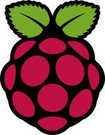

라즈베리 파이(영어: Raspberry Pi)는 영국 잉글랜드의 라즈베리 파이 재단이 학교와 개발도상국에서 기초 컴퓨터 과학의 교육을 증진시키기 위해 개발한 신용카드 크기의 싱글 보드 컴퓨터이다. 초기의 라즈베리 파이는 엘레멘트14/프리미어 파넬, RS 콤포넌트와의 허가된 제조 협정을 통해 제작되었다.[9]
라즈베리 파이는 그래픽 성능이 뛰어나면서도 가격이 저렴(-VAT 제외- 1세대 모델 A와 1세대 모델 A+의 경우 25달러, 1세대와 2세대를 포함한 나머지 모델의 경우 35달러)한 것이 특징이다.
라즈베리 파이는 모두 동일한 비디오코어 IV GPU와,[10] 싱글코어 ARMv6에 호환되는 CPU 또는 신형의 ARMv7에 호환되는 쿼드코어(라즈베리 파이 2), 1 GB의 RAM(라즈베리 파이 2), 512 MB(라즈베리 파이 1 B와 B+),[11] 또는 256 MB(모델 A와 A+, 구형 모델 B)의 메모리를 포함한다.
이들은 SD 카드 슬롯 (모델 A 와 B) 또는 부팅 가능한 매체와 지속적인 정보 저장을 위한 마이크로SDHC를 갖추고 있다.
